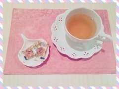
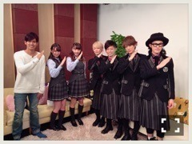

| 2016/03 18 Fri | ひめたん-0o0-その619 |

アー写が14th制服になりました！
明日からいよいよ
アンダーライブ全国ツアーが
始まります。
スタートは名古屋公演。
せいらりんの卒業コンサートです
いろいろやります。
最後まで楽しい時間になりますように♡

優雅なティータイム風に見えますが
結構苦い香りがしてきます、
喉に良いお茶と喉に良い飴ちゃん。
マネージャーさんが
用意してくださいました(´,,•ω•,,｀)
そしてライブが終わったら
すぐ14thシングル発売ですね。
アンダー曲......type-D
個人PV......type-B
に収録されています。
ひめたんしかー！って方は是非
チェックしてくださいませ( ˇωˇ )
そうそう、MV解禁になったんですね
14thアンダー曲「不等号」の
センターを務めさせていただいています
単独でのセンターは11th以来、
あれからちょうど一年経つんですね
再び任せてもらえるなんてありがたい。
一年前と今とでは
アンダーメンバーの雰囲気は
随分変わった気がします。
メンバー編成が変わり、
各々が担うものが大きくなり、
気づけば私自身、このチームの中で
お姉さん側の立場になっていました。
層が厚い、誰が真ん中でも成立する、
今のアンダーメンバーはそれくらい
キラキラしてるし、みんな頼もしい。
そんな中で今回
センターに立つということ
改めて、その意味を考えなければ。
変わらないことが一番怖い、
精一杯頑張ります。
さて、いくつかお知らせがあります！
3月23日 24:00～24:54
ニッポン放送「ミュ～コミ＋プラス」
中田・中元で出演します！
わーい＼(^o^)／嬉しい！
番組ホームページはこちらです
おたより待ってるよ～

4/6はトップエール発売～
連載「乃木坂46中元日芽香の挑戦！」
毎回いろんなことに挑戦してます
今回は中塚翠涛先生に
「美文字」を教えていただきました！
楽しかったよお習字o(^o^)o
～お知らせ～
3/18 AKB新聞
3/19 ビックコミックスピリッツ
3/23 ミュ～コミ＋プラス
3/27 のぎえいご
4/6 トップエール
4/10 マーキー
スピリッツさんの写真早く載せたい！！
毎週金曜はソニレコ更新日。
3月のお当番は鈴木絢音ちゃん、
ゲストにThinking Dogsの皆さんを
お迎えしました(^o^)
なんかいろいろカオスなことになってます
ひまっぴーの壁ドン！！！
チャンネル登録はこちらから。

坂ポーズ！！
(＊´・ω・＊)
コメント(744)
2016/03/18 23:54